Etapa 3 · roteiro §2 0:30 – 0:38
Como atravessar aqui?
…alguns insistirão em fazer “sinal de vida”, então reforce que o sinal de vida só é feito na faixa de pedestre…
- “Aqui não tem faixa, nem semáforo, nem passarela. Como a gente atravessa?”
- Dois quadros com a Nina em vídeo: o sinal de vida e ela olhando o trânsito.
- Quem escolhe o sinal ouve: “O sinal de vida é só na faixa de pedestre!”
Por quêA pegadinha é de propósito: quem jogou o jogo 2 vai querer repetir o gesto, e aprende aqui que o sinal de vida só vale na faixa.

06 · Elenco
Os mesmos personagens, e o trânsito que não para

Lumi · o guia
Leva a logo do DER no peito. Pergunta como o educador e fala com a mesma voz dos outros jogos.

Nina · a protagonista
Espera um passo atrás do meio-fio e observa o trânsito virando a cabeça.
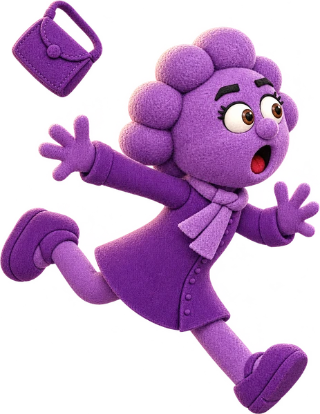
Dona Pressa · o erro comum
Ganhou duas poses: correndo e tropeçando no meio-fio.
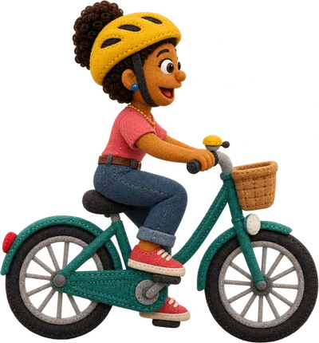
A ciclista · na ciclofaixa
A Ana do jogo 2, agora na faixa dela. Junto vêm os carros e uma moto nova.
07 · Estética
O mesmo feltro, com peças novas só onde faltavam
Balão, cartão, botão, anel, seta, estrela, faixa e o quadro do quiz são os dos outros jogos. Foram gerados o logo, as pegadas, os ícones dos cartões, a moto e as vistas de frente e de costas de quem entra e sai da curva.
Os três quadros do quiz da ciclofaixa foram compostos com os próprios veículos do jogo sobre a faixa vermelha da rua.
Peças novas
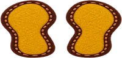
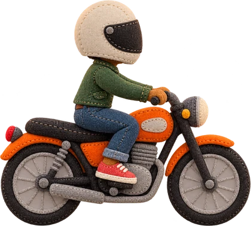
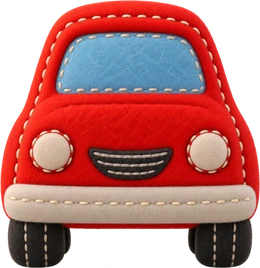
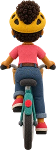
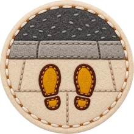
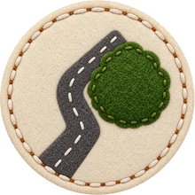
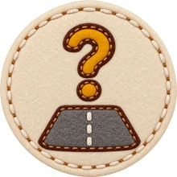
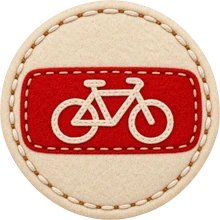
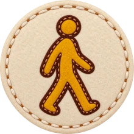
Reaproveitadas

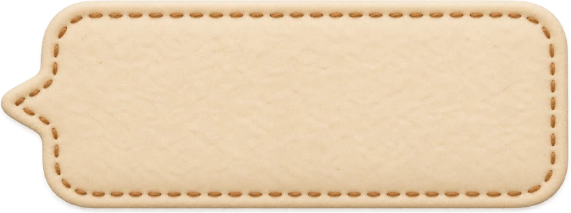


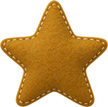